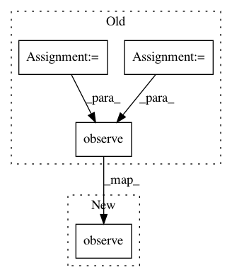

cf6d258c003a5a5b5073830e73e4580aeaf71d45,tensorforce/execution/runner.py,Runner,run,#Runner#Any#Any#Any#Any#,48
Before Change
self.timestep = 1
while True:
if self.preprocessor:
processed_state = self.preprocessor.process(state)
else:
processed_state = state
action = self.agent.act(state=processed_state)
if before_execution:
action = before_execution(self, action)
if self.repeat_actions > 1:
reward = 0
for repeat in xrange(self.repeat_actions):
state, step_reward, terminal = self.environment.execute(action=action)
reward += step_reward
if terminal:
break
else:
state, reward, terminal = self.environment.execute(action=action)
episode_reward += reward
self.agent.observe(state=processed_state, action=action, reward=reward, terminal=terminal)
if terminal or self.timestep == max_timesteps:
break
self.timestep += 1
After Change
else:
next_state, reward, terminal = self.environment.execute(action=action)
self.agent.observe(state=state, action=action, reward=reward, terminal=terminal)
state = next_state
self.timestep += 1
episode_reward += reward
In pattern: SUPERPATTERN
Frequency: 3
Non-data size: 4
Instances
Project Name: reinforceio/tensorforce
Commit Name: cf6d258c003a5a5b5073830e73e4580aeaf71d45
Time: 2017-06-24
Author: aok25@cl.cam.ac.uk
File Name: tensorforce/execution/runner.py
Class Name: Runner
Method Name: run
Project Name: reinforceio/tensorforce
Commit Name: 3dc5dc8098e7376df70c522498e17460b0c9b2be
Time: 2017-10-15
Author: aok25@cl.cam.ac.uk
File Name: tensorforce/agents/batch_agent.py
Class Name: BatchAgent
Method Name: observe
Project Name: reinforceio/tensorforce
Commit Name: 3dc5dc8098e7376df70c522498e17460b0c9b2be
Time: 2017-10-15
Author: aok25@cl.cam.ac.uk
File Name: tensorforce/agents/memory_agent.py
Class Name: MemoryAgent
Method Name: observe